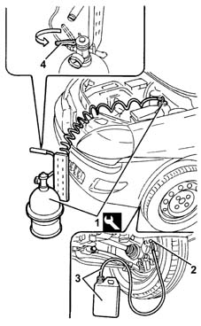

0010T65 hydraulic brake system bleed air
- Path
- Procedures > 00 MAINTENANCE > 0010 NEW UNITS AND PLANNED MAINTENANCE'. > 0010T vehicle oil and fluids > 0010T65 hydraulic brake system bleed air
- Kind
- repair procedure (removal / refitting; the operation number is the code)
- Applies to
- all engines; all production periods
- Interactive page
- https://sloeber94.github.io/elrnDB-lYpsln/en/#/2428830
Applies to: all engines; all production periods
Applies to: all engines; all production periods
Applies to: engines: 1.2 8v, 1.2 16v, 1.4 16v; all production periods
Place the car on a lift.
Using the dipstick, check that the brake-clutch fluid level is between the MIN and MAX marks on the dipstick.
1. Remove the brake-clutch fluid reservoir cap and connect the equipment to the reservoir.
 | Name | Country |
|---|---|---|
1 | Anti-pollution | 1.806.097.000 |
2. Remove the protective cap on the brake caliper bleed valve.
3. Connect the collection system (pipe and reservoir) to the bleed valve on the brake caliper.
Open the bleed valve.
4. Slowly open the fluid reservoir cock.
Wait until all the air contained in the hydraulic system has emerged.
Close the brake caliper bleed valve.
Repeat the above operations for the other brake caliper and the two rear brake cylinders.
Remove the vehicle from the lift.
Applies to: engines: 1.3 JTD; all production periods
Place the car on a lift.
Using the dipstick, check that the brake-clutch fluid level is between the MIN and MAX marks on the dipstick.
1. Remove the brake-clutch fluid reservoir cap and connect the equipment to the reservoir.
| Name | Country |
|---|---|---|
1 | Anti-pollution | 1.806.097.000 |
2. Remove the protective cap on the brake caliper bleed valve.
3. Connect the collection system (pipe and reservoir) to the bleed valve on the brake caliper.
Open the bleed valve.
4. Slowly open the fluid reservoir cock.
Wait until all the air contained in the hydraulic system has emerged.
Close the brake caliper bleed valve.
Repeat the above operations for the other brake caliper and the two rear brake cylinders.
Remove the vehicle from the lift.

Topics that link to this page (22)
- 1820B10 Clutch fluid RESERVOIR - R.R. and washing interior
- 3310A14 FRONT DISC BRAKES - R.R.
- 3310A30 FRONT BRAKE CALIPER (one) - R.R.
- 3320B10 REAR. DRUM BRAKES - R.R.
- 3320B20 Rear brake shoe CYLINDER (one) left or right - Replace.
- 3330C30 brake fluid reservoir - r + r and wash inside
- 3330D02 brake servo/brake pump assembly - r r
- 3330E10 FLEXIBLE PIPE (one), left or right, to front brake calipers - R.R .
- 3330E34 Intermediate FLEXIBLE PIPE (one), left or right, to rear brakes - R.R.
- 3340A12 A'B.S. system. - electronic and hydraulic CONTROL UNIT R.R.
- 3340A13 abs central mount - r r
- 3340B10 FLEXIBLE front brake PIPE (one), left or right - R.R.
- 3340B30 FLEXIBLE rear brake PIPE (one) left or right - R.R.
- 3340B52 pump/central obs pipe - r r
- 3340B55 central brake pipe to lh - r r
- 3340B56 RIGID PIPE from hydraulic CONTROL UNIT to RIGHT FRONT BRAKE - R.R.
- 3340B62 rear connection central pipe - r r
- 3340B74 RIGID PIPE from connector to rear brakes . (one), left or right - R.R.
- 3340B76 rigid pipe(one), lh or rh, to rear brake cylinder - r r
- 4420D20 rear suspension axle -replace- includes r+r, check, parts transfer and bleeding
- 4450D14 hub axle pillar of one rear wheel, l/h or r/h - r+r with hub removed - includes bush replacement if necessary
- 4450D15 rear stub axle strut - r r